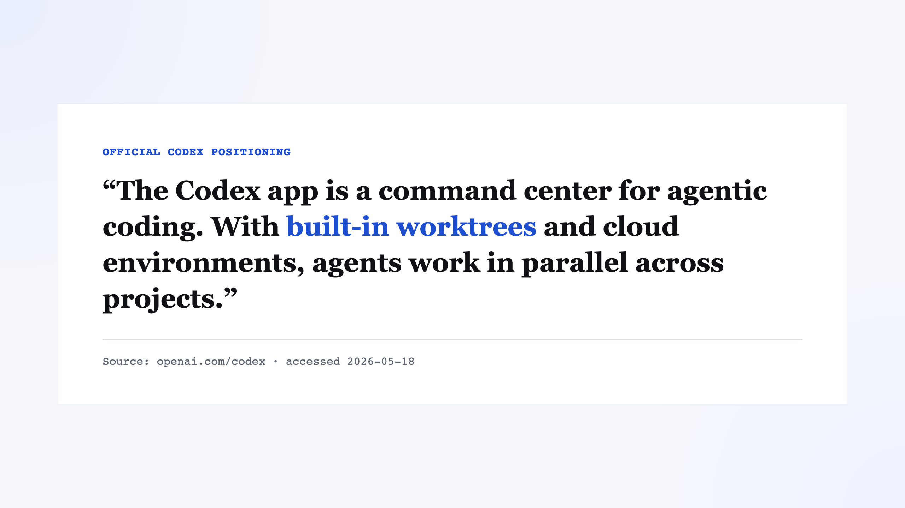

Social scientists have been teaching Git for a long time. The issue was not neglect. It was mismatch. The version of Git we were taught was much smaller than the version AI coding tools assume you already know.
If you had asked me a year ago what Git was for, I would have given a very small answer: add, commit, push. Save the files, leave a trace, move on. For a long time, that was enough. As a political scientist, I was not maintaining a production codebase or coordinating a software team. I was trying to keep research scripts, outputs, and drafts from dissolving into a folder full of final_v3_really_final.do files.
Then Codex and Claude Code arrived with a much larger idea of what Git was supposed to be.
I went back through a pile of old Codex transcripts expecting to find a familiar kind of embarrassment: a few wrong commands, a few silly mistakes, a few moments where I clearly had no idea what I was doing. There was plenty of that. But it was not the main pattern. What kept showing up instead was a mismatch between two different versions of Git. The first was the Git I had actually needed for years: add, commit, push. The second was the Git that AI coding tools quietly assume you already understand: branches, pull requests, rebases, merges, worktrees, and phrases like detached HEAD that still do not sound like they were designed for normal people.
Once I saw that split, a lot of my own Git frustration started to make more sense.
The Git Social Scientists Were Taught
If you look at the classic Git materials written for economists and social scientists, the ambition is modest. Texts like Code and Data for the Social Sciences, Git for economists, and Git/GitHub, Transparency, and Legitimacy in Quantitative Research are not manuals for professional software collaboration. They are attempts to stop researchers from losing control of their own projects.
That older workflow is not glamorous, but it is rational. You have code, maybe some cleaning scripts, a few model specifications, and a folder full of outputs you do not trust yourself to reconstruct six weeks later. Git gives you a way to say: this script produced this table; this is the version before I changed the estimator; this is where the project stopped making sense.
For that kind of work, Git often collapses into three verbs. You add the files you want. You commit them with a sentence that hopefully means something. Then you push, mostly because you do not want your laptop to be the only place where the project exists. That was the version of Git I thought I was learning. It was manageable because it solved a real problem.
| Question | The social-science Git tutorial answer | The AI-tool answer |
|---|---|---|
| What is Git for? | Reproducibility, backup, traceability | Collaboration, isolation, parallel work |
| Default unit of work | A saved research state | A reviewable branch or diff |
| Core verbs | add, commit, push | branch, rebase, merge, PR, worktree |
| Main fear | Losing track of results | Dirty trees, conflicting histories, ambiguous state |
This is why a lot of Git advice in social science feels so reasonable. It is built around the real pathologies of research work. We forget which script produced which result. We tweak the sample definition and fail to document it. We overwrite something important late at night and only realize it the next morning. We come back a week later and discover that the number in the draft no longer corresponds to any version of the code we can actually find. For those problems, add, commit, and push are not a childish beginning. They are most of the solution.
In that sense, Git entered social science less as software engineering than as infrastructure for research transparency.
The trouble started when AI tools brought in a different one.
Codex and Claude Code Brought the Developer World With Them

Codex and Claude Code help you write code, but they also bring a developer workflow with them. You can see it in what they treat as normal. Branches are cheap. Changes should be isolated. Pull requests are a natural unit of work. Rebasing is ordinary maintenance rather than obscure ritual. Worktrees are not a weird edge case but a built-in feature. The tools present this as the default environment.
All of this makes sense if you already live in software. It makes much less sense if you opened Git because you wanted a safer way to track research code and outputs.
One of the clearest moments in my transcripts was almost embarrassingly simple. Faced with an extra branch created in the course of AI-assisted work, my instinctive response was basically: just make this the main branch and merge it back, because I am the only person working here.
现在的 branch 就设为主分支吧，直接合并进主分支，因为只有我一个人工作。
Detached HEAD, in civilian language
In normal life, a branch just keeps moving forward: first commit, second commit, third commit. HEAD points to the branch, and the branch points to the latest commit. In detached HEAD, HEAD points directly to a specific commit instead. You can still commit there, but the new commit is no longer attached to an ordinary branch name unless you create one.
That instinct was not wrong. It was just out of sync with the world the tool assumed. detached HEAD was the perfect example. I still do not think this is a normal phrase to throw at civilians. rebase at least sounds like a thing you do. detached HEAD sounds like either a medical emergency or a punishment.
What made it feel so alien was that, in the single-author Git I was used to, I almost never had to go back from the third commit to the second one. Why would I? Usually you only do that if you are checking an older state, trying to reproduce an earlier result, or because a tool has temporarily parked you there during something like a rebase. The fact that AI workflows made me think about this at all was part of the story.
Single-person Git tutorials in social science usually do not force you to think very hard about historical position. They are trying to help you save your work and make your research reproducible. AI coding tools, by contrast, assume a world where the exact placement of work matters all the time.
AI coding tools brought more than automation. They brought a developer style of project organization.
The Hard Part Was Never the Commands
The most misleading thing about Git is that beginners think the hard part is the advanced vocabulary. It is not. The hard part is boundaries.
I used to think git add was basically a harmless save button. It is not. git add is a declaration. It says: these changes belong to the same thing. If you do not know what “the same thing” is, Git becomes miserable very quickly.
This is how you end up with giant commits. A log file sneaks in. Then a cached output. Then a generated figure. Then a temporary script. Then some AI tool touches a file you never asked it to touch. Suddenly you are staring at a commit with hundreds of thousands of lines, and the real problem is not that push might fail. It is that you also know this commit should not exist.
One case made that painfully obvious. I only wanted to save three files: one script and two diagnostic outputs. The worktree, however, was full of unrelated changes. One of the files I actually needed was even ignored, so it had to be forced in with git add -f. This was a tiny task dressed up as a huge mess. Git was forcing me to answer a question I had avoided earlier: what, exactly, belongs to this commit?
This is why git status can feel so accusatory. It lists files, but it also reveals the shape of your disorder. Which files are code? Which are results? Which are temporary? Which are noise? Which belong to this line of work, and which are leftovers from another one? A dirty working directory is often just a messy thought process made visible.
This was also why rebase ended up teaching me more than I expected. I learned it because a local crawler file blocked a pull --rebase, so I had to stash exactly that file, let the rebase continue, resolve a conflict in .gitignore, and then figure out how to keep moving when even rebase --continue got stuck. It felt much less like mastering Git and much more like being cornered into understanding it.
This, I think, is the real emotional structure of Git for many non-programmers. The commands are not what hurts. What hurts is being forced to make boundaries explicit.
Git punishes not clumsiness, but vagueness.
And research work, especially early-stage research work, often runs on vagueness for longer than we like to admit.
Why Git Matters More in the Age of AI
If AI tools made Git more annoying, they also made it harder to avoid.
The first reason is simple: Git is one of the things AI seems naturally comfortable with. The training material is full of Git commands, Git workflows, Git conflicts, Git histories, and Git discussions. So when an AI agent operates around status, diff, commit, branch, or merge, it is moving through a structure it has already seen many times. Git is textual, explicit, and structured. It tells the machine what changed, where it changed, and how history is organized.
For empirical research, version management goes beyond saving code. It is about tracking changes in research design. Which sample definition was I using when this result looked good? When did I switch estimators? When did I add those controls? Which figure came from which specification? Why did the regression I ran on Monday stop reproducing on Tuesday?
These are not edge cases. They are the texture of real research. Without version control, those changes often live in memory, filenames, chat messages, or nowhere at all. A lot of research confusion is not grand fraud or deep theoretical error. It is simply the slow disappearance of process.
Git does not solve that by itself. It cannot make a bad workflow good. But it does something important. It gives those changes a place to land.
That matters even more in an AI workflow, because AI tends to increase the volume of change. More edits happen. More files get touched. More temporary branches appear. More things get generated, rewritten, or refactored at speed. If you do not have a way to record what happened, the project becomes unreadable very quickly.
The old social-science tutorials were right that version control is part of reproducible research. What they could not fully anticipate was that AI would also turn version control into a human-machine coordination problem.
In the age of AI, Git does two jobs at once. It gives the machine a native interface for acting on a codebase, and it gives the researcher a low-cost but unusually strict external memory.
We Are Using AI, and AI Is Retraining Us
For a long time, I thought the story was simple: I was bad at Git. Now I think the story is slightly different. I was fine at the Git I originally needed. What I was not prepared for was the larger Git that AI coding tools dragged into my work.
That larger Git came with branches, pull requests, rebases, worktrees, and detached HEAD. It also came with a quieter demand: that I become much more precise about what a piece of work is, where it belongs, and how it relates to the version that came before.
At one point, that meant learning how to survive a stash-plus-rebase sequence I would never have chosen for myself. At another, it meant cleaning up three leftover worktrees from an earlier agent-assisted experiment and realizing that I now had to understand several working directories instead of one.
That change was first of all a nuisance. It forced a political scientist to deal with a set of engineering concepts that had not been part of his original training. But it was not only a nuisance. Once those concepts entered my workflow, they started changing the workflow itself. I began thinking more clearly about what belonged in a commit, what deserved its own branch, what counted as a reproducible result, and what was still only an experiment. The discipline arrived through irritation, but it arrived nonetheless.
I used to think I could not use Git. What I understand now is simpler. I did not need all of Git before. I only needed a smaller one.
Social-science tutorials taught me the Git of the single-person pipeline. AI coding tools brought in the Git of the professional developer. The first solved reproducibility problems. The second imported a new layer of complexity.
We like to say that we are using AI to help us work. That is true. But it is also incomplete. While we are using AI, AI is quietly changing how we understand code, version history, and research work itself.
Related: The Emotional Cost of 1,248 AI Coding Sessions and What 713 R Errors Taught Me About AI Coding Assistants.
Siyao Zheng is an Assistant Professor at the School of International and Public Affairs, Shanghai Jiao Tong University.